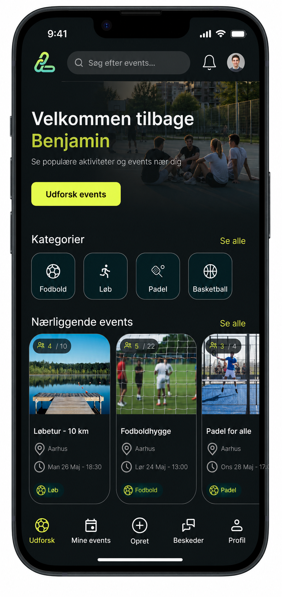
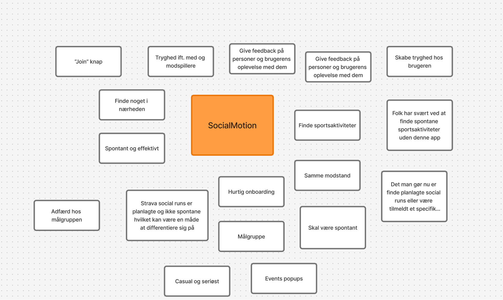
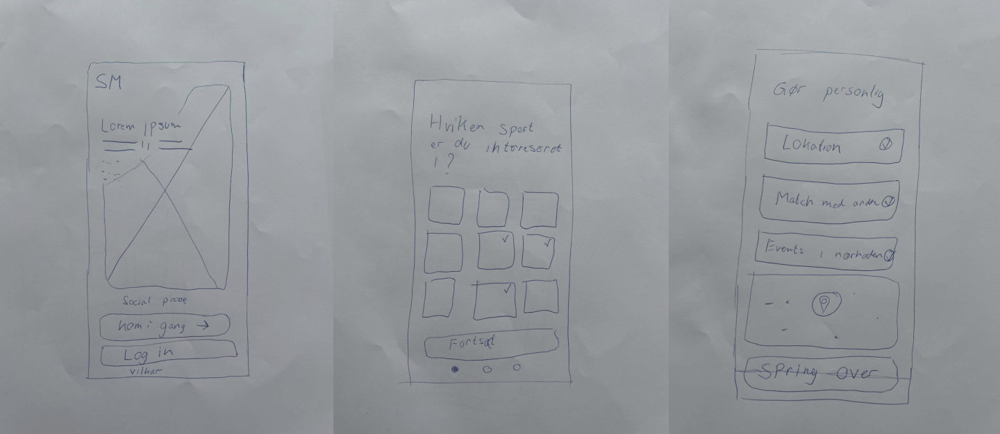
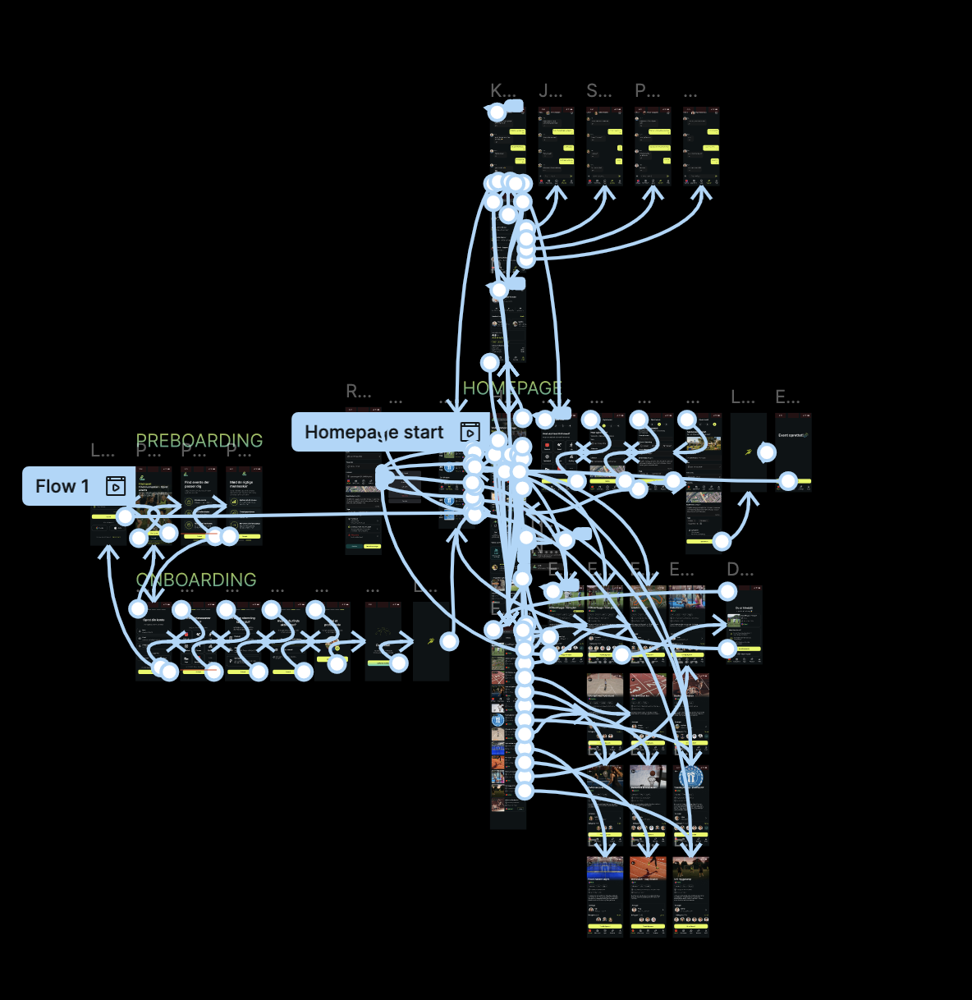
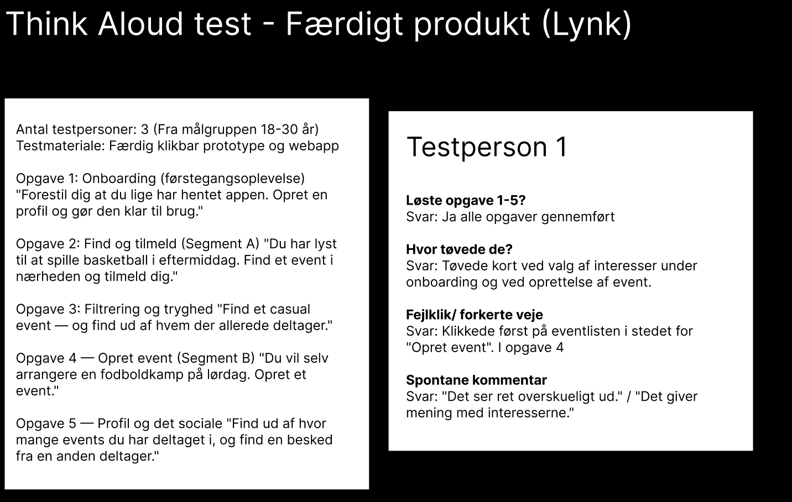
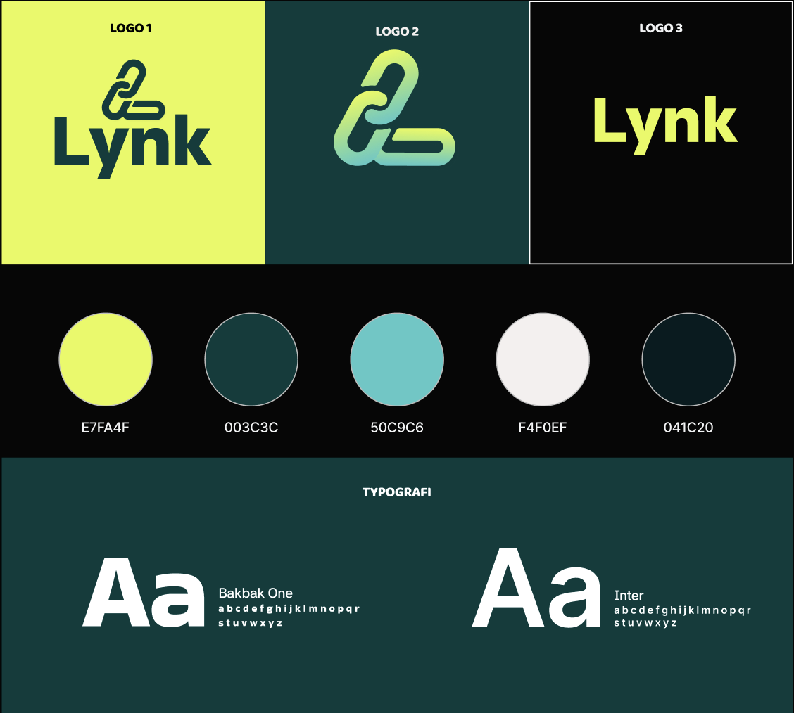
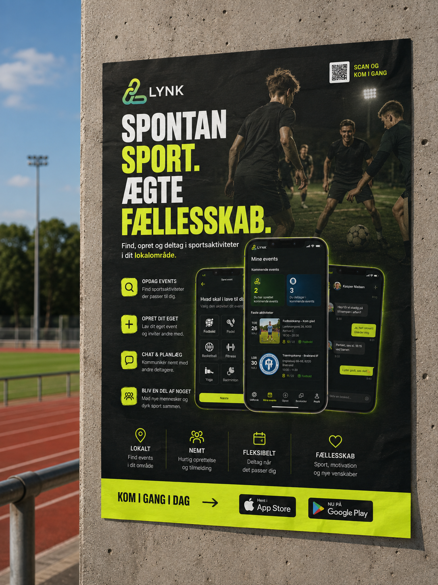

Lynk er en social webapp, som jeg var med til at udvikle som eksamensprojekt på multimediedesigneruddannelsen. Idéen bag platformen er at gøre det nemmere at være spontan og finde andre mennesker at dyrke sport med – uden at det nødvendigvis kræver planlægning flere dage i forvejen.
Projektet tager udgangspunkt i interessen for sport og de sociale fællesskaber, der opstår, når mennesker mødes gennem fysisk aktivitet. Med Lynk kan brugeren hurtigt se, hvilke aktiviteter der sker i nærheden, finde noget, der passer til tid og interesse, og spontant vælge at deltage.
Brugerne kan udforske og filtrere sportsaktiviteter efter deres præferencer, tilmelde sig eksisterende events eller selv oprette nye arrangementer. Lynk blev udviklet som en single-page application i React med Supabase som database, hvor vi arbejdede med hele processen fra research og UX/UI-design til udvikling og den færdige løsning.

1
2
3
4Mine events giver brugeren et samlet overblik over kommende aktiviteter. Her kan man hurtigt se de events, man selv har oprettet, og dem man deltager i, med relevante informationer som dato, tidspunkt, lokation og antal deltagere.
Vores designsystem skaber en ensartet og genkendelig visuel identitet på tværs af Lynk. Farver, logo og typografi er valgt med fokus på at skabe et moderne og energisk udtryk, der understøtter sport, spontanitet og fællesskab.

Projektet har givet mig en større forståelse for, hvordan research, idéudvikling, design og udvikling hænger sammen i arbejdet med at skabe et digitalt produkt. Undervejs har jeg især lært værdien af at teste idéer tidligt og løbende justere løsningen ud fra brugernes behov og feedback. Samtidig har projektet styrket mine kompetencer inden for både UX/UI og frontend-udvikling og givet mig erfaring med at føre en idé hele vejen fra det første koncept til et fungerende produkt.
